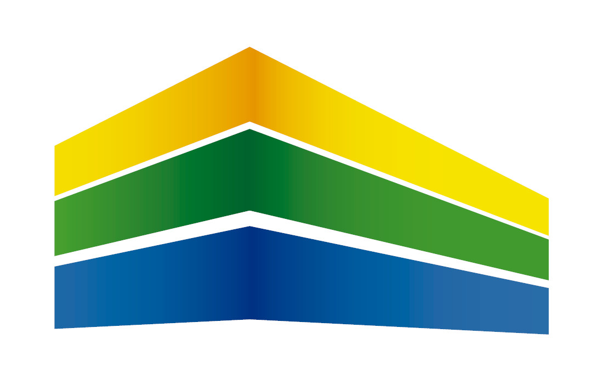

C.I.F.P. Nº1, Ceuta

¿Te apasiona la Informática? Si es así, te invitamos a descubrir los Ciclos Formativos que ofertamos en nuestro Centro. Sin duda podrás encontrar el que más se adapte a tus intereses y comenzar a prepararte para un brillante futuro profesional. Haz clic en el menú de arriba para saber más.